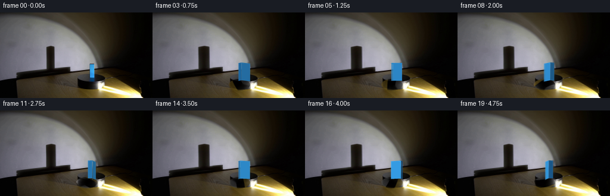
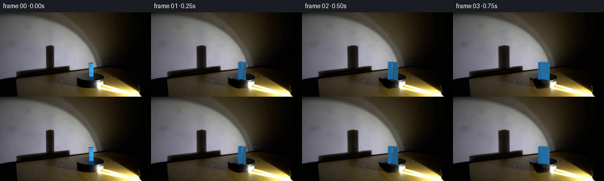
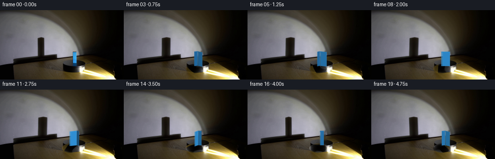
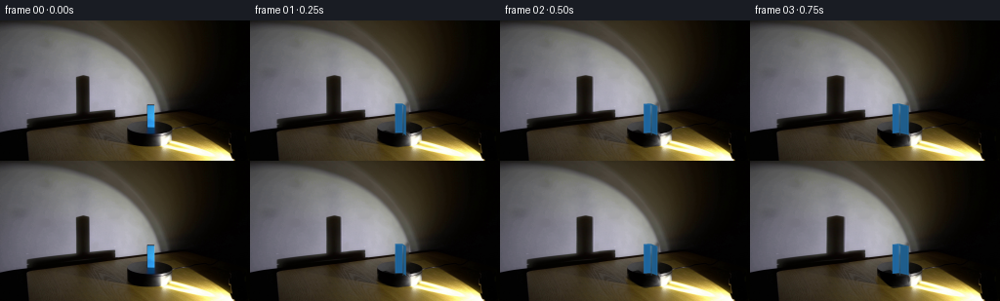

CODING AGENTS AS PIXEL WORLD MODELS
traex/DeepSeek-V4.1-Flash · 0073
点击播放 · 原生 RGB 像素
逐轮保存的候选
回放视频、检查图与代码变化。
每份候选均可单独播放。实际图片检查记录在下方工具轨迹中。
候选 01播放与检查图
点击播放 · 原生 RGB 像素


展开代码变化
--- 上一保存版本
+++ 本次保存版本
@@ -0,0 +1,339 @@
+from __future__ import annotations
+
+import math
+from pathlib import Path
+
+import cv2
+import numpy as np
+from PIL import Image, ImageDraw, ImageFilter
+
+import artifact_io
+
+
+WIDTH = 256
+HEIGHT = 144
+FRAME_COUNT = 20
+FPS = 4
+SUPERSAMPLE = 4
+
+CASE_DIR = Path(__file__).resolve().parent
+FIRST_FRAME = CASE_DIR / "first_frame.png"
+
+
+def feather_mask(width: int, height: int, radius: float) -> np.ndarray:
+ """Rounded rectangular mask with a soft falloff."""
+ yy, xx = np.mgrid[:height, :width].astype(np.float32)
+ inside_x = np.minimum(xx + 0.5, width - xx - 0.5)
+ inside_y = np.minimum(yy + 0.5, height - yy - 0.5)
+ distance = np.minimum(inside_x, inside_y)
+ return np.clip(distance / max(radius, 0.5), 0.0, 1.0)
+
+
+def remove_block(frame: np.ndarray) -> np.ndarray:
+ """Replace the photographed block with a locally inferred background."""
+ mask = np.zeros((HEIGHT, WIDTH), dtype=np.uint8)
+ polygon = np.array(
+ [[148, 83], [162, 83], [163, 118], [147, 118]],
+ dtype=np.int32,
+ )
+ cv2.fillPoly(mask, [polygon], 255)
+ cleaned = cv2.inpaint(
+ cv2.cvtColor(frame, cv2.COLOR_RGB2BGR),
+ mask,
+ 3.0,
+ cv2.INPAINT_TELEA,
+ )
+ return cv2.cvtColor(cleaned, cv2.COLOR_BGR2RGB)
+
+
+def warp_wall_shadow(
+ base: np.ndarray,
+ projected_width: float,
+) -> np.ndarray:
+ """Move and widen the existing wall shadow as the box turns."""
+ x0, y0, x1, y1 = 69, 42, 102, 106
+ patch = base[y0:y1, x0:x1]
+ height, width = patch.shape[:2]
+ yy, xx = np.mgrid[:height, :width].astype(np.float32)
+ center_x = (width - 1) * 0.5
+
+ extent = np.clip((projected_width - 8.0) / 10.0, 0.0, 1.0)
+ scale = 1.0 + 0.38 * extent
+ shift = -1.35 * extent
+
+ map_x = (center_x + (xx - center_x) / scale + shift).astype(np.float32)
+ map_y = yy.astype(np.float32).copy()
+ warped = cv2.remap(
+ patch,
+ map_x,
+ map_y,
+ interpolation=cv2.INTER_CUBIC,
+ borderMode=cv2.BORDER_REFLECT_101,
+ )
+
+ mask = feather_mask(width, height, 4.0)[:, :, None]
+ output = base.copy()
+ output[y0:y1, x0:x1] = (
+ warped.astype(np.float32) * mask
+ + patch.astype(np.float32) * (1.0 - mask)
+ ).astype(np.uint8)
+ return output
+
+
+def rotate_platform(
+ base: np.ndarray,
+ angle_degrees: float,
+) -> np.ndarray:
+ """Rotate only the dark turntable surface, leaving its outline stable."""
+ center = (145.5, 121.0)
+ matrix = cv2.getRotationMatrix2D(center, -angle_degrees, 1.0)
+ rotated = cv2.warpAffine(
+ base,
+ matrix,
+ (WIDTH, HEIGHT),
+ flags=cv2.INTER_CUBIC,
+ borderMode=cv2.BORDER_REFLECT_101,
+ )
+
+ yy, xx = np.mgrid[:HEIGHT, :WIDTH].astype(np.float32)
+ ellipse = ((xx - center[0]) / 18.0) ** 2 + ((yy - center[1]) / 9.5) ** 2
+ mask = np.clip((1.08 - ellipse) / 0.18, 0.0, 1.0)
+ mask *= 0.68
+
+ output = base.astype(np.float32)
+ output = (
+ rotated.astype(np.float32) * mask[:, :, None]
+ + output * (1.0 - mask[:, :, None])
+ )
+ return np.clip(output, 0, 255).astype(np.uint8)
+
+
+def normalized(vector: np.ndarray) -> np.ndarray:
+ length = float(np.linalg.norm(vector))
+ return vector / max(length, 1e-8)
+
+
+def render_block(
+ base: np.ndarray,
+ angle_degrees: float,
+ projected_width: float,
+) -> np.ndarray:
+ """Render a small upright cuboid with soft, physically coherent shading."""
+ size = (WIDTH * SUPERSAMPLE, HEIGHT * SUPERSAMPLE)
+ layer = Image.new("RGBA", size, (0, 0, 0, 0))
+ draw = ImageDraw.Draw(layer, "RGBA")
+
+ # A soft contact shadow anchors the block to the turntable.
+ contact_w = (projected_width * 0.70 + 4.0) * SUPERSAMPLE
+ contact_h = 3.2 * SUPERSAMPLE
+ contact_box = [
+ 154.0 * SUPERSAMPLE - contact_w,
+ 115.0 * SUPERSAMPLE - contact_h,
+ 154.0 * SUPERSAMPLE + contact_w,
+ 115.5 * SUPERSAMPLE + contact_h,
+ ]
+ contact = Image.new("RGBA", size, (0, 0, 0, 0))
+ contact_draw = ImageDraw.Draw(contact, "RGBA")
+ contact_draw.ellipse(contact_box, fill=(0, 0, 0, 92))
+ contact = contact.filter(
+ ImageFilter.GaussianBlur(radius=2.0 * SUPERSAMPLE)
+ )
+ layer = Image.alpha_composite(layer, contact)
+ draw = ImageDraw.Draw(layer, "RGBA")
+
+ theta = math.radians(angle_degrees)
+ pitch = math.radians(9.0)
+ cos_t, sin_t = math.cos(theta), math.sin(theta)
+ cos_p, sin_p = math.cos(pitch), math.sin(pitch)
+
+ box_width = 18.0
+ box_depth = 8.0
+ box_height = 30.0
+ center_x = 154.0
+ center_y = 100.5
+
+ camera = normalized(np.array([0.0, sin_p, -cos_p], dtype=np.float64))
+ light = normalized(np.array([-0.42, 0.70, -0.58], dtype=np.float64))
+
+ def rotate(point: np.ndarray) -> np.ndarray:
+ x, y, z = point
+ return np.array(
+ [
+ x * cos_t + z * sin_t,
+ y,
+ -x * sin_t + z * cos_t,
+ ],
+ dtype=np.float64,
+ )
+
+ def project(point: np.ndarray) -> tuple[float, float]:
+ x, y, z = rotate(point)
+ perspective = 1.0 + 0.006 * z
+ screen_x = center_x + x * perspective
+ screen_y = center_y - y * cos_p + z * sin_p
+ return (
+ screen_x * SUPERSAMPLE,
+ screen_y * SUPERSAMPLE,
+ )
+
+ hx, hy, hz = box_width / 2, box_height / 2, box_depth / 2
+ faces = [
+ (
+ np.array([0.0, 0.0, -1.0]),
+ [
+ [-hx, -hy, -hz],
+ [hx, -hy, -hz],
+ [hx, hy, -hz],
+ [-hx, hy, -hz],
+ ],
+ np.array([53.0, 158.0, 231.0]),
+ ),
+ (
+ np.array([0.0, 0.0, 1.0]),
+ [
+ [hx, -hy, hz],
+ [-hx, -hy, hz],
+ [-hx, hy, hz],
+ [hx, hy, hz],
+ ],
+ np.array([47.0, 142.0, 211.0]),
+ ),
+ (
+ np.array([1.0, 0.0, 0.0]),
+ [
+ [hx, -hy, -hz],
+ [hx, -hy, hz],
+ [hx, hy, hz],
+ [hx, hy, -hz],
+ ],
+ np.array([31.0, 102.0, 158.0]),
+ ),
+ (
+ np.array([-1.0, 0.0, 0.0]),
+ [
+ [-hx, -hy, hz],
+ [-hx, -hy, -hz],
+ [-hx, hy, -hz],
+ [-hx, hy, hz],
+ ],
+ np.array([39.0, 118.0, 177.0]),
+ ),
+ (
+ np.array([0.0, 1.0, 0.0]),
+ [
+ [-hx, hy, -hz],
+ [hx, hy, -hz],
+ [hx, hy, hz],
+ [-hx, hy, hz],
+ ],
+ np.array([73.0, 103.0, 116.0]),
+ ),
+ ]
+
+ visible = []
+ for normal, corners, material in faces:
+ rotated_normal = rotate(normal)
+ facing = float(np.dot(rotated_normal, camera))
+ if facing <= 0.015:
+ continue
+ polygon = [project(np.array(corner, dtype=np.float64)) for corner in corners]
+ depth = float(np.mean([rotate(np.array(c, dtype=np.float64))[2] for c in corners]))
+ diffuse = max(0.0, float(np.dot(rotated_normal, light)))
+ brightness = 0.66 + 0.48 * diffuse
+ if normal[1] > 0.5:
+ brightness *= 0.84
+ color = np.clip(material * brightness, 0, 255).astype(int)
+ visible.append((depth, polygon, tuple(int(v) for v in color)))
+
+ # Painter order: farther faces first.
+ for _, polygon, color in sorted(visible, key=lambda item: item[0], reverse=True):
+ draw.polygon(polygon, fill=(*color, 255))
+ draw.line(
+ polygon + [polygon[0]],
+ fill=(
+ min(255, color[0] + 15),
+ min(255, color[1] + 15),
+ min(255, color[2] + 15),
+ 190,
+ ),
+ width=max(1, SUPERSAMPLE // 2),
+ )
+
+ # Narrow vertical specular strip on the illuminated front edge.
+ front_candidates = [item for item in visible if item[0] < 0.0]
+ if front_candidates:
+ _, polygon, color = max(front_candidates, key=lambda item: item[0])
+ xs = [p[0] for p in polygon]
+ ys = [p[1] for p in polygon]
+ left = min(xs)
+ right = max(xs)
+ top = min(ys)
+ bottom = max(ys)
+ inset = max(1, int(round((right - left) * 0.10)))
+ highlight = (
+ min(255, color[0] + 18),
+ min(255, color[1] + 17),
+ min(255, color[2] + 13),
+ 135,
+ )
+ if bottom > top + 3 * SUPERSAMPLE:
+ draw.rectangle(
+ [
+ left + inset,
+ top + 2 * SUPERSAMPLE,
+ left + inset + SUPERSAMPLE // 2,
+ bottom,
+ ],
+ fill=highlight,
+ )
+
+ layer = layer.resize((WIDTH, HEIGHT), Image.Resampling.LANCZOS)
+ overlay = np.asarray(layer, dtype=np.float32)
+ alpha = overlay[:, :, 3:4] / 255.0
+ return np.clip(
+ overlay[:, :, :3] * alpha + base.astype(np.float32) * (1.0 - alpha),
+ 0,
+ 255,
+ ).astype(np.uint8)
+
+
+def main() -> None:
+ first = np.asarray(Image.open(FIRST_FRAME).convert("RGB"), dtype=np.uint8)
+ cleaned = remove_block(first)
+
+ frames = []
+ for index in range(FRAME_COUNT):
+ if index == 0:
+ frames.append(first.copy())
+ continue
+
+ time_seconds = index / FPS
+ angle = 90.0 + 72.0 * time_seconds
+ projected_width = (
+ 18.0 * abs(math.cos(math.radians(angle)))
+ + 8.0 * abs(math.sin(math.radians(angle)))
+ )
+
+ frame = rotate_platform(cleaned, angle - 90.0)
+ frame = warp_wall_shadow(frame, projected_width)
+ frame = render_block(frame, angle, projected_width)
+ frames.append(frame)
+
+ frames_array = np.stack(frames, axis=0)
+ artifact_io.save(frames_array, CASE_DIR)
+
+ video_path = CASE_DIR / "rgb_video.mp4"
+ writer = cv2.VideoWriter(
+ str(video_path),
+ cv2.VideoWriter_fourcc(*"mp4v"),
+ FPS,
+ (WIDTH, HEIGHT),
+ )
+ if writer.isOpened():
+ for frame in frames_array:
+ writer.write(cv2.cvtColor(frame, cv2.COLOR_RGB2BGR))
+ writer.release()
+
+
+if __name__ == "__main__":
+ main()
候选 02播放与检查图
点击播放 · 原生 RGB 像素


展开代码变化
--- 上一保存版本
+++ 本次保存版本
@@ -49,6 +49,7 @@
def warp_wall_shadow(
base: np.ndarray,
projected_width: float,
+ angle_degrees: float,
) -> np.ndarray:
"""Move and widen the existing wall shadow as the box turns."""
x0, y0, x1, y1 = 69, 42, 102, 106
@@ -58,10 +59,16 @@
center_x = (width - 1) * 0.5
extent = np.clip((projected_width - 8.0) / 10.0, 0.0, 1.0)
- scale = 1.0 + 0.38 * extent
- shift = -1.35 * extent
-
- map_x = (center_x + (xx - center_x) / scale + shift).astype(np.float32)
+ scale = 0.96 + 0.42 * extent
+ shift = -2.65 * extent
+ shear = 0.95 * math.sin(math.radians(angle_degrees - 90.0))
+
+ map_x = (
+ center_x
+ + (xx - center_x) / scale
+ + shift
+ + shear * (yy - (height - 1) * 0.5) / max(height * 0.5, 1.0)
+ ).astype(np.float32)
map_y = yy.astype(np.float32).copy()
warped = cv2.remap(
patch,
@@ -150,7 +157,7 @@
box_depth = 8.0
box_height = 30.0
center_x = 154.0
- center_y = 100.5
+ center_y = 101.8
camera = normalized(np.array([0.0, sin_p, -cos_p], dtype=np.float64))
light = normalized(np.array([-0.42, 0.70, -0.58], dtype=np.float64))
@@ -308,14 +315,14 @@
continue
time_seconds = index / FPS
- angle = 90.0 + 72.0 * time_seconds
+ angle = 90.0 + 45.0 * time_seconds
projected_width = (
18.0 * abs(math.cos(math.radians(angle)))
+ 8.0 * abs(math.sin(math.radians(angle)))
)
frame = rotate_platform(cleaned, angle - 90.0)
- frame = warp_wall_shadow(frame, projected_width)
+ frame = warp_wall_shadow(frame, projected_width, angle)
frame = render_block(frame, angle, projected_width)
frames.append(frame)
可观测工具轨迹
实际执行的命令与返回图片。
命令 1exit 0
/bin/bash -c "pwd && rg --files -g '"'!*.mp4'"' -g '"'!*.mov'"' -g '"'!*.webm'"' | sed -n '1,200p'"
命令 2exit 0
/bin/bash -c "sed -n '1,240p' prompt.txt"
命令 3exit 0
/bin/bash -c "sed -n '1,280p' GENERATION_RULES.md"
命令 4exit 127
/bin/bash -c "file first_frame.png && identify -verbose first_frame.png | sed -n '1,80p'"
命令 5exit 0
/bin/bash -c "sed -n '1,260p' artifact_io.py"
命令 6exit 0
/bin/bash -c "sed -n '1,260p' player_template.html"
命令 7exit 0
/bin/bash -c "python3 - <<'PY'
from PIL import Image
import numpy as np
im=Image.open('first_frame.png').convert('RGB')
a=np.asarray(im)
print(im.size, im.mode, a.shape, a.dtype)
print('min',a.min((0,1)),'max',a.max((0,1)),'mean',a.mean((0,1)))
# most common exact colors
u,c=np.unique(a.reshape(-1,3),axis=0,return_counts=True)
for i in np.argsort(c)[-30:][::-1]: print(tuple(u[i]), int(c[i]))
PY"命令 8exit 0
/bin/bash -c "python3 - <<'PY'
from PIL import Image
import numpy as np
im=np.array(Image.open('first_frame.png').convert('RGB')).astype(float)
# 128x72 ascii based luminance and color dominance
for yy in range(0,144,2):
row=''
for xx in range(0,256,2):
b=im[yy:yy+2,xx:xx+2].mean((0,1)); r,g,bb=b
mx=max(b); mn=min(b)
if bb>r*1.25 and bb>g*1.12 and bb>45: ch='B'
elif bb>r*1.15 and bb>35: ch='b'
elif r>g*1.35 and r>bb*1.7 and r>60: ch='O'
elif mx<12: ch=' '
elif mx<25: ch='.'
elif mx<45: ch=':'
elif mx<70: ch='-'
elif mx<100: ch='='
elif mx<140: ch='+'
elif mx<190: ch='*'
else: ch='#'
row+=ch
print(f'{yy:03d} '+row)
PY"命令 9exit 0
/bin/bash -c "python3 - <<'PY'
try:
import cv2; print('cv2', cv2.__version__)
except Exception as e: print('no cv2',e)
try:
import scipy; print('scipy', scipy.__version__)
except Exception as e: print('no scipy',e)
PY"命令 10exit 0
/bin/bash -c "python3 - <<'PY'
import cv2, numpy as np
im=cv2.imread('first_frame.png')
hsv=cv2.cvtColor(im, cv2.COLOR_BGR2HSV)
# blue mask broad
m=(hsv[:,:,0]>90)&(hsv[:,:,0]<135)&(hsv[:,:,1]>90)&(hsv[:,:,2]>40)
n, lab, stats, cen=cv2.connectedComponentsWithStats(m.astype('uint8'),8)
print('blue comps')
for i in np.argsort(stats[1:,4])[-20:][::-1]+1:
x,y,w,h,area=stats[i]; print(i,(x,y,w,h,area),cen[i])
# row/col blue extents
ys,xs=np.where(m); print('blue extent',xs.min(),xs.max(),ys.min(),ys.max(),len(xs))
# inspect HSV distribution around likely block
for y in range(80,122,4):
xs=np.where(m[y])[0]
print('y',y,'runs',end=' ')
if len(xs):
cuts=np.r_[0,np.where(np.diff(xs)>1)[0]+1,len(xs)]
print([(int(xs[a]),int(xs[b-1])) for a,b in zip(cuts[:-1],cuts[1:])],end=' ')
print()
PY"命令 11exit 0
/bin/bash -c "python3 - <<'PY'
from PIL import Image
import numpy as np
im=np.array(Image.open('first_frame.png').convert('RGB'))
# crop each scene region and print quantized palette/color statistics
regions={'block':(145,80,166,122),'platform':(55,88,245,144),'wall':(0,0,220,100),'spot':(80,0,185,90),'floor':(0,95,140,144)}
for name,(x0,y0,x1,y1) in regions.items():
a=im[y0:y1,x0:x1]
print('\\n',name,a.shape,'mean',a.mean((0,1)).round(1),'min',a.min((0,1)),'max',a.max((0,1)))
q=(a//16*16)
u,c=np.unique(q.reshape(-1,3),axis=0,return_counts=True)
for i in np.argsort(c)[-12:][::-1]: print(tuple(u[i]),int(c[i]))
PY"命令 12exit 0
/bin/bash -c "python3 - <<'PY'
import cv2, numpy as np
im=cv2.imread('first_frame.png')
# grayscale edge, hough lines
g=cv2.cvtColor(im,cv2.COLOR_BGR2GRAY)
for t1,t2 in [(20,50),(40,90),(70,130)]:
ed=cv2.Canny(g,t1,t2)
ls=cv2.HoughLinesP(ed,1,np.pi/180,threshold=20,minLineLength=20,maxLineGap=5)
print('Canny',t1,t2,'lines',None if ls is None else len(ls))
if ls is not None:
for l in sorted([x[0] for x in ls], key=lambda q:-(q[2]-q[0])**2-(q[3]-q[1])**2)[:30]: print(tuple(map(int,l)))
PY"命令 13exit 0
/bin/bash -c "python3 - <<'PY'
from PIL import Image
import numpy as np
im=np.array(Image.open('first_frame.png').convert('RGB'))
# print rows of hex colors at selected columns/rows using 4px cells; show letter classes based on HSV
import colorsys
for y in range(0,144,4):
vals=[]
for x in range(0,256,4):
a=im[y:min(y+4,144),x:min(x+4,256)].mean((0,1))
r,g,b=a/255
h,s,v=colorsys.rgb_to_hsv(r,g,b)
if s>.45 and .5<h<.75 and v>.25: c='B'
elif s>.30 and (h<.15 or h>.95) and v>.20: c='O'
elif v<.08: c=' '
elif v<.16:c='.'
elif v<.28:c=':'
elif v<.43:c='-'
elif v<.60:c='='
elif v<.75:c='+'
elif v<.88:c='*'
else:c='#'
vals.append(c)
print(f'{y:03d} '+''.join(vals))
print('sample grid (x,y,rgb):')
for y in range(0,144,12):
print(y,[(x,tuple(im[y,x])) for x in range(0,256,16)])
PY"命令 14exit 0
/bin/bash -c "python3 - <<'PY'
import cv2, numpy as np
im=cv2.imread('first_frame.png')
# Print crop stats around block, BGR
for y in range(80,124,2):
print('y',y, [(x, tuple(int(v) for v in im[y,x][::-1])) for x in range(140,170,3)])
PY"命令 15exit 0
/bin/bash -c "python3 - <<'PY'
from PIL import Image
import numpy as np
im=np.array(Image.open('first_frame.png').convert('RGB'))
# find pixel color distributions by vertical bands, print mean/median and color maxima
for x0,x1 in [(0,20),(20,40),(40,60),(60,80),(80,100),(100,120),(120,140),(140,160),(160,180),(180,200),(200,220),(220,240),(240,256)]:
a=im[:100,x0:x1]
print(x0,x1,'mean',a.mean((0,1)).round(0).astype(int),'med',np.median(a.reshape(-1,3),axis=0).astype(int))
PY"命令 16exit 0
/bin/bash -c "python3 - <<'PY'
import cv2, numpy as np
im=cv2.imread('first_frame.png')
g=cv2.cvtColor(im,cv2.COLOR_BGR2GRAY)
# print local max / bright blob stats
for thr in [100,130,160,190,220,245]:
m=g>thr
n,l,s,c=cv2.connectedComponentsWithStats(m.astype('uint8'),8)
print('thr',thr,'pixels',m.sum(),'components')
for i in np.argsort(s[1:,4])[-12:][::-1]+1: print(tuple(map(int,s[i])),tuple(np.round(c[i],1)))
PY"命令 17exit 0
/bin/bash -c "python3 - <<'PY'
from PIL import Image
import numpy as np
im=np.array(Image.open('first_frame.png').convert('RGB'))
# crop first frame upscaled into six panels? save temporary numeric inspection images
Image.fromarray(im[70:144,130:190]).resize((480,592),Image.Resampling.NEAREST).save('.tmp/block_crop.png')
Image.fromarray(im[0:110,70:175]).resize((525,550),Image.Resampling.NEAREST).save('.tmp/spot_crop.png')
Image.fromarray(im[90:144,0:256]).resize((1024,216),Image.Resampling.NEAREST).save('.tmp/floor_crop.png')
print('saved')
PY"命令 18exit 0
/bin/bash -c "python3 - <<'PY'
from PIL import Image
import numpy as np
im=np.array(Image.open('first_frame.png').convert('RGB'))
# exact row runs for dark region to characterize platform silhouette
for y in [94,96,98,100,102,104,106,108,110,112,114,116,118,120,122,124,126,128,130,132,134,136,138,140,142]:
row=im[y]
# dark (<20 avg)
m=row.mean(1)<20
xs=np.where(m)[0]
cuts=np.r_[0,np.where(np.diff(xs)>1)[0]+1,len(xs)] if len(xs) else []
runs=[(int(xs[a]),int(xs[b-1])) for a,b in zip(cuts[:-1],cuts[1:])] if len(xs) else []
print(y,runs[:12])
PY"命令 19exit 0
/bin/bash -c "python3 - <<'PY'
from PIL import Image
import numpy as np
im=np.array(Image.open('first_frame.png').convert('RGB'))
# selected rows, compressed runs by avg brightness / hue class
for y in [0,10,20,30,40,50,60,70,80,90,100,110,116,120,124,128,132,136,140,143]:
vals=[]
for x in range(256):
r,g,b=im[y,x].astype(int)
v=max(r,g,b)
if b>r*1.25 and b>g*1.15 and b>55: c='B'
elif v<10:c=' '
elif v<20:c='.'
elif v<40:c=':'
elif v<65:c='-'
elif v<90:c='='
elif v<120:c='+'
elif v<155:c='*'
elif v<200:c='#'
else:c='@'
vals.append(c)
# run-length
out=[]; last=vals[0]; start=0
for i,c in enumerate(vals[1:],1):
if c"'!=last:
if i-start>=2: out.append((start,i-1,last))
last=c;start=i
if 256-start>=2: out.append((start,255,last))
print(y,out)
PY'命令 20exit 0
/bin/bash -c "python3 - <<'PY'
from PIL import Image
import numpy as np
im=np.array(Image.open('first_frame.png').convert('RGB'))
# estimate block face bbox using color criteria and list edge pixels / colors
for y in range(82,121):
row=im[y]
# blue strength b - (r+g)/2
s=row[:,2]-(row[:,0]+row[:,1])/2
xs=np.where(s>45)[0]
if len(xs):
print(y, int(xs.min()),int(xs.max()),len(xs), 'center rgb',tuple(im[y,(xs.min()+xs.max())//2]), 'edge',tuple(im[y,xs.min()]),tuple(im[y,xs.max()]))
PY"命令 21exit 0
/bin/bash -c "python3 - <<'PY'
from PIL import Image
import numpy as np
im=np.array(Image.open('first_frame.png').convert('RGB')).astype(np.float32)
# coherence: sample x at y=100 and print rgb 120:180
for y in [85,95,105,115,125,135,142]:
print('\\ny',y)
for x in range(120,200,2):
print(f'{x}:{tuple(im[y,x].astype(int))}',end=' ')
print()
PY"命令 22exit 0
/bin/bash -c "python3 - <<'PY'
from PIL import Image
import numpy as np
im=np.array(Image.open('first_frame.png').convert('RGB'))
# sample row 50, 70, 90 exact brightness across x with runs in 4 px median
for y in [0,20,40,60,80,90,100,110,120,130,143]:
print('row',y)
for x in range(0,256,8):
a=im[y:min(y+2,144),x:min(x+8,256)].mean((0,1)).astype(int)
print(f'{x}:{tuple(a)}',end=' ')
print()
PY"命令 23exit 0
/bin/bash -c "python3 - <<'PY'
from PIL import Image
import numpy as np
im=np.array(Image.open('first_frame.png').convert('RGB')).astype(float)
# 64x36 map with color classes based on hue and brightness
for yy in range(0,144,4):
row=''
for xx in range(0,256,4):
a=im[yy:yy+4,xx:xx+4].mean((0,1)); r,g,b=a
mx=max(a); mn=min(a); sat=(mx-mn)/(mx+1e-6)
if b>r*1.25 and b>g*1.1 and b>45: ch='B'
elif r>g*1.15 and g>b*1.25 and r>70: ch='Y'
elif sat<.12 and mx>130: ch='#'
elif sat<.12 and mx>90: ch='O'
elif sat<.12 and mx>55: ch='o'
elif sat<.12 and mx>28: ch='.'
elif mx<10: ch=' '
elif mx<25: ch=','
elif mx<45: ch=':'
elif mx<70: ch='-'
elif mx<100: ch+='+' if False else '='
elif mx<130: ch='+'
elif mx<170: ch='*'
elif mx<210: ch='@'
else: ch='#'
row+=ch
print(f'{yy:03d} '+row)
PY"命令 24exit 0
/bin/bash -c "python3 - <<'PY'
from PIL import Image
import numpy as np
im=np.array(Image.open('first_frame.png').convert('RGB')).astype(float)
# estimate background surface fields, print differences frame impossible. Use low-pass horizontal derivatives to detect wall corners.
g=im.mean(2)
# columns with max gradients within wall top (y 0-95) excluding spot/shadow regions
for y in [0,30,60,90]:
d=np.abs(np.diff(g[y])).astype(int)
print('y',y,'peaks',sorted([(int(v),int(i)) for i,v in enumerate(d)],reverse=True)[:20])
PY"命令 25exit 0
/bin/bash -c "python3 - <<'PY'
from PIL import Image
import numpy as np
im=np.array(Image.open('first_frame.png').convert('RGB'))
# block-specific region map, each char one px, 140-165 x 82-122, exact-ish brightness/hue
for y in range(82,123):
row=''
for x in range(140,166):
r,g,b=im[y,x].astype(int); mx=max(r,g,b); mn=min(r,g,b)
if b-r>40 and b-g>20: c='B'
elif mx>235:c='#'
elif mx>190:c='@'
elif mx>150:c='*'
elif mx>110:c='+'
elif mx>75:c='='
elif mx>50:c='-'
elif mx>30:c=':'
elif mx>12:c='.'
else:c=' '
row+=c
print(f'{y:03d} {row}')
PY"命令 26exit 0
/bin/bash -c "python3 - <<'PY'
from PIL import Image
import numpy as np
im=np.array(Image.open('first_frame.png').convert('RGB')).astype(float)
# compute block center and local perspective from face: rows of high blue strength
for y in range(84,117):
b=im[y,:,2]-(im[y,:,0]+im[y,:,1])/2
xs=np.where(b>80)[0]
if len(xs): print(y, int(xs.min()),int(xs.max()), int(xs.mean()), round(float(b[xs].mean()),1))
PY"命令 27exit 0
/bin/bash -c "python3 - <<'PY'
from PIL import Image
import numpy as np
im=np.array(Image.open('first_frame.png').convert('RGB')).astype(float)
# print column profiles at x=154 (block) and x=130/170 etc y=80-125
for x in [140,145,150,154,157,160,165,170]:
print('\\nx',x)
for y in range(80,126,2):
print(f'{y}:{tuple(im[y,x].astype(int))}',end=' ')
print()
PY"命令 28exit 0
/bin/bash -c "python3 - <<'PY'
import cv2, numpy as np
im=cv2.imread('first_frame.png')
g=cv2.cvtColor(im,cv2.COLOR_BGR2GRAY)
for thr in [8,12,16,20,25,30,40,50]:
m=(g<thr).astype('uint8')
n,l,s,c=cv2.connectedComponentsWithStats(m,8)
print('\\nthr',thr,'pixels',m.sum())
for i in np.argsort(s[1:,4])[-15:][::-1]+1:
x,y,w,h,area=s[i]; print(tuple(map(int,(x,y,w,h,area))),tuple(np.round(c[i],1)))
PY"命令 29exit 0
/bin/bash -c "python3 - <<'PY'
from PIL import Image
import numpy as np
im=np.array(Image.open('first_frame.png').convert('RGB')).astype(float)
# measure blue block color along top edge and average face palette
mask=(im[:,:,2]-im[:,:,0]>40)&(im[:,:,2]-im[:,:,1]>15)&(np.arange(144)[:,None]>=86)&(np.arange(144)[:,None]<=110)&(np.arange(256)[None,:]>=150)&(np.arange(256)[None,:]<=159)
a=im[mask]
print('count',len(a),'mean',a.mean(0),'median',np.median(a,0),'percentiles',np.percentile(a,[5,25,50,75,95],axis=0))
# per row medians
for y in range(86,111):
m=mask[y]
if m.any(): print(y,np.median(im[y,m],axis=0),im[y,m].min(0),im[y,m].max(0))
PY"命令 30exit 0
/bin/bash -c "python3 - <<'PY'
from PIL import Image
import numpy as np
im=np.array(Image.open('first_frame.png').convert('RGB')).astype(float)
# columns around spot edges and color values
for y in [0,10,20,30,40,50,60,70,80,90]:
print('y',y)
for x in [70,74,77,78,79,80,81,84,88,90,92,94,96,100,120,140,148,150,152,156,158,160,162,164,166,170,175,180,190,200,210,220]:
a=im[y,x].astype(int)
print(f'{x}:{tuple(a)}',end=' ')
print()
PY"命令 31exit 0
/bin/bash -c "python3 - <<'PY'
from PIL import Image
import numpy as np
im=np.array(Image.open('first_frame.png').convert('RGB')).astype(float)
# global low-frequency spatial model residual: estimate base as broad gaussian (scipy) and show deviation class map.
from scipy.ndimage import gaussian_filter
g=im.mean(2)
base=gaussian_filter(g, sigma=(7,7))
d=g-base
print('diff percentiles',np.percentile(d,[0,1,5,25,50,75,95,99,100]))
# save numeric visualizations for inspection (temporary)
def norm(x):
lo,hi=np.percentile(x,[1,99]); return np.clip((x-lo)/(hi-lo)*255,0,255).astype('uint8')
Image.fromarray(norm(g)).save('.tmp/gray.png')
Image.fromarray(norm(d)).save('.tmp/resid.png')
PY"命令 32exit 1
/bin/bash -c 'python3 generate.py'
命令 33exit 1
/bin/bash -c 'python3 generate.py'
命令 34exit 0
/bin/bash -c 'python3 generate.py'
命令 35exit 0
/bin/bash -c "python3 - <<'PY'
from PIL import Image
import numpy as np, os, hashlib
first=np.array(Image.open('first_frame.png').convert('RGB'))
frames=np.stack([np.array(Image.open(f'frames/{i:02d}.png').convert('RGB')) for i in range(20)])
print('shape',frames.shape,'fps',4,'dtype',frames.dtype)
print('frame0 identical',np.array_equal(first,frames[0]),hashlib.sha256(first.tobytes()).hexdigest(),hashlib.sha256(frames[0].tobytes()).hexdigest())
print('changed pixels per transition',[int(np.any(frames[i]"'!=frames[i-1],axis=2).sum()) for i in range(1,20)])
print('"'mean abs delta per transition',[round(float(np.abs(frames[i].astype(int)-frames[i-1].astype(int)).mean()),2) for i in range(1,20)])
print('artifacts')
for p in ['pixels.npz','index.html','inspection.png','transition_check.png','rgb_video.mp4']:
print(p,os.path.exists(p),os.path.getsize(p) if os.path.exists(p) else None)
PY"命令 36exit 0
/bin/bash -c "python3 - <<'PY'
from PIL import Image
import numpy as np
for idx in [0,1,4,8,12,16,19]:
im=np.array(Image.open(f'frames/{idx:02d}.png').convert('RGB'))
print('\\nFRAME',idx)
for y in range(78,122,2):
row=''
for x in range(140,172):
r,g,b=im[y,x].astype(int); mx=max(r,g,b); mn=min(r,g,b)
if b-r>38 and b-g>12: c='B'
elif mx>235:c='#'
elif mx>190:c='@'
elif mx>150:c='*'
elif mx>110:c='+'
elif mx>75:c='='
elif mx>50:c='-'
elif mx>30:c=':'
elif mx>12:c='.'
else:c=' '
row+=c
print(f'{y:03d} {row}')
PY"命令 37exit 0
/bin/bash -c "python3 - <<'PY'
from PIL import Image
import numpy as np
fr=np.stack([np.array(Image.open(f'frames/{i:02d}.png').convert('RGB')) for i in range(20)])
for i in range(1,20):
d=np.max(np.abs(fr[i].astype(int)-fr[i-1].astype(int)),axis=2)>0
ys,xs=np.where(d)
# counts by coarse region
print(i,'bbox',xs.min(),ys.min(),xs.max(),ys.max(),'wall<100',int(d[:100].sum()),'shadow',int(d[40:110,65:105].sum()),'block',int(d[80:120,140:170].sum()),'platform',int(d[110:,125:175].sum()))
PY"命令 38exit 0
/bin/bash -c "python3 - <<'PY'
from PIL import Image
import numpy as np
for idx in [0,1,2,3,4,8,12,16,19]:
im=np.array(Image.open(f'frames/{idx:02d}.png').convert('RGB')).astype(int)
m=(im[:,:,2]-im[:,:,0]>38)&(im[:,:,2]-im[:,:,1]>12)
print('\\nframe',idx)
for y in range(82,120,2):
xs=np.where(m[y,130:180])[0]+130
if len(xs): print(y,int(xs.min()),int(xs.max()),len(xs))
PY"命令 39exit 0
/bin/bash -c "python3 generate.py && python3 - <<'PY'
from PIL import Image
import numpy as np, hashlib, os
first=np.array(Image.open('first_frame.png').convert('RGB'))
frames=np.stack([np.array(Image.open(f'frames/{i:02d}.png').convert('RGB')) for i in range(20)])
print('shape',frames.shape,'first identical',np.array_equal(first,frames[0]))
print('changed px', [int(np.any(frames[i]"'!=frames[i-1],axis=2).sum()) for i in range(1,20)])
print('"'mean abs delta', [round(float(np.abs(frames[i].astype(int)-frames[i-1].astype(int)).mean()),2) for i in range(1,20)])
print('video bytes',os.path.getsize('rgb_video.mp4'))
PY"命令 40exit 0
/bin/bash -c "python3 - <<'PY'
from PIL import Image
import numpy as np
for idx in [0,1,2,3,4,5,8,10,12,15,18,19]:
im=np.array(Image.open(f'frames/{idx:02d}.png').convert('RGB')).astype(int)
m=(im[:,:,2]-im[:,:,0]>38)&(im[:,:,2]-im[:,:,1]>12)
print('frame',idx,end=': ')
for y in [84,86,92,100,108,114]:
xs=np.where(m[y,130:180])[0]+130
print(y,((int(xs.min()),int(xs.max())) if len(xs) else None),end='; ')
print()
PY"命令 41exit 0
/bin/bash -c "python3 - <<'PY'
import cv2
v=cv2.VideoCapture('rgb_video.mp4')
print('opened',v.isOpened(),'frames',v.get(cv2.CAP_PROP_FRAME_COUNT),'fps',v.get(cv2.CAP_PROP_FPS),'size',v.get(cv2.CAP_PROP_FRAME_WIDTH),v.get(cv2.CAP_PROP_FRAME_HEIGHT))
n=0
while True:
ok,f=v.read()
if not ok: break
n+=1
print('decoded',n)
v.release()
PY"命令 42exit 0
/bin/bash -c "python3 -m py_compile generate.py && python3 - <<'PY'
from PIL import Image
import numpy as np, json, os
from pathlib import Path
p=Path('.')
frames=np.stack([np.array(Image.open(p/'frames'/f'{i:02d}.png').convert('RGB')) for i in range(20)])
z=np.load(p/'pixels.npz')['pixels']
print('npz',z.shape,z.dtype)
packed=(frames[:,:,:,0].astype(np.uint32)<<16)|(frames[:,:,:,1].astype(np.uint32)<<8)|frames[:,:,:,2]
print('pixels npz matches frames',np.array_equal(z,packed.transpose(1,2,0)))
html=(p/'index.html').read_text()
print('player ready marker', 'window.__pixelReady=true' in html, 'embedded bytes',len(html))
print('required files', {f:os.path.getsize(f) for f in ['generate.py','pixels.npz','index.html','inspection.png','transition_check.png','rgb_video.mp4']})
PY"命令 43exit 0
/bin/bash -c 'git status --short 2>/dev/null || true'
保存候选 2 份；完成命令 43 次；可验证图片返回 0 张。原始 API 响应与完整日志保留在本地。